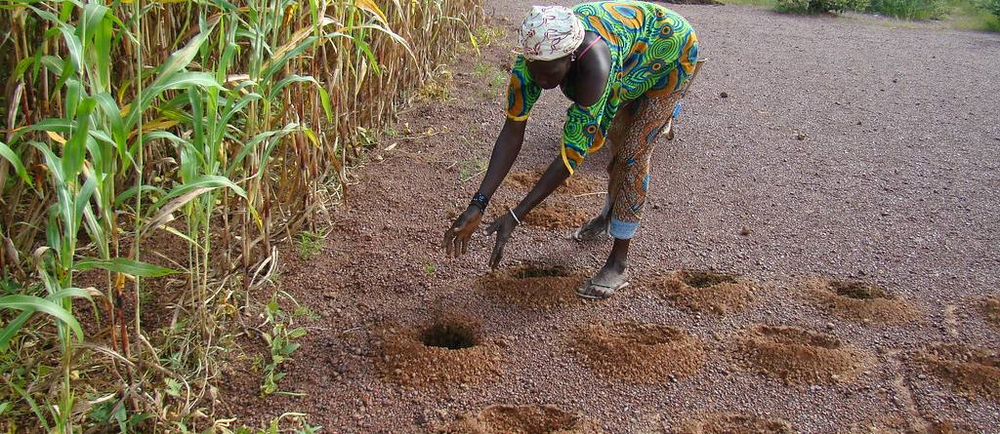

Climate evidence driving just, resilient food, land and water systems
The curated front door to CGIAR climate work: what the programme is doing, who is doing it, and the evidence behind it. The raw datasets live in the technical data hub.
One field, with the suggestions in the placeholder rather than as chips below it. 0 items are catalogued, so browsing by area of work below will usually be faster than searching.
Where this site ends and the technical data hub begins
The most repeated comment on the review board, across the header, the featured datasets, the data-scientist section and the footer, was that nobody could tell these two apart. This is a proposed line, not an agreed one. Move it if it is wrong, but the site needs one.
Curated and editorial
Written for someone deciding what to fund, commission or cite.
- Areas of work, and the use cases running under each
- Wikis, primers and data stories
- Flagship CGIAR climate assets
- Publications, methods and innovation catalogues
- Funding calls, events and calls for papers
- Who to talk to, and how to propose a use case
Machine-facing
Written for someone about to load the data into something.
- The full dataset card view, with every field
- STAC catalogue, API access and schemas
- Runnable notebooks and code examples
- Download routes and format conversion
- Metadata standards and onboarding for new datasets
The proposed rule in one sentence: if a reader wants to know what CGIAR is doing about climate, it belongs here; if they want the file, it belongs in the technical hub. Every link out to the technical hub on this site opens in a new tab, so nobody loses their place.
The five areas of work, with use cases nested inside
Folded by default so the whole programme fits on one screen. Open one to see the use cases running under it and the catalogue items each draws on. The five areas are as published on cgiar.org, so this spine can be checked; the ten editorial themes used elsewhere cannot, which is why they are a filter on the resources page rather than the structure here.
The climate data this work runs on
What this catalogue cannot yet do
Every figure below is computed from the catalogue when the page loads. These are content problems, not design problems, and no choice of front end fixes any of them.